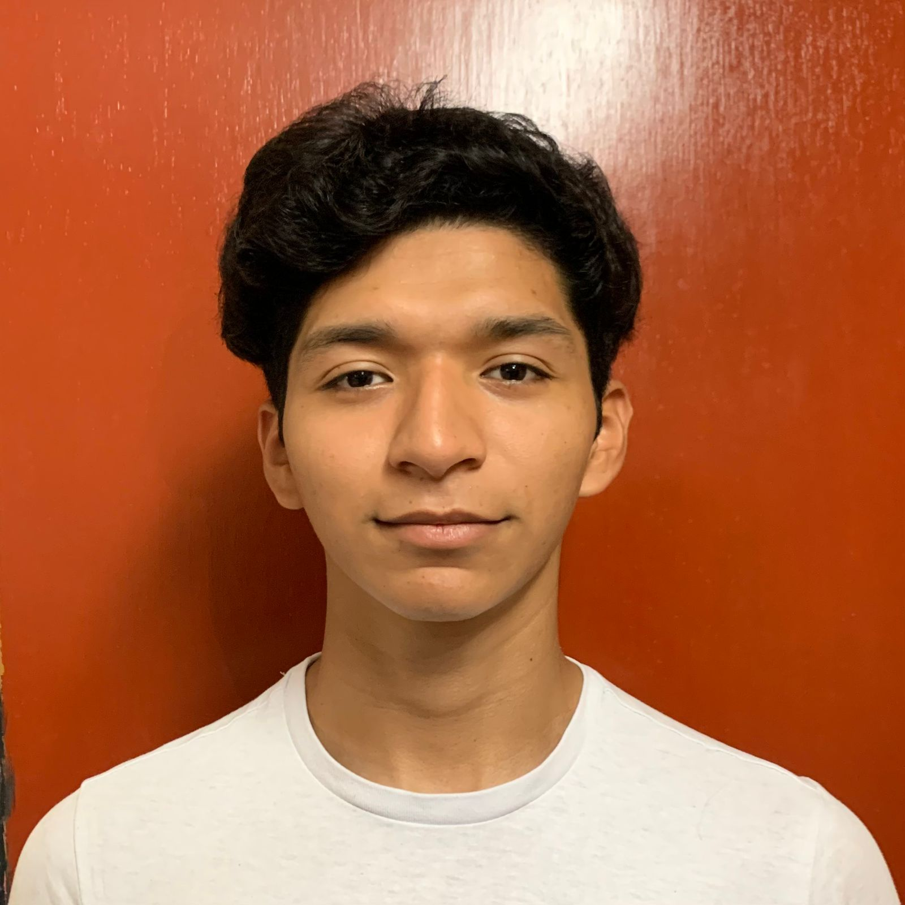

Xavier Armando Dzib Miranda
Estudiante de Licenciatura de Ingeniería de Software
Formación y Trayectoria
Educación
-
Licenciatura en Ingeniería de Software
Universidad Autónoma de Yucatán (2022 - Actualidad)
-
Curso de Desarrollo Web Full Stack
Google Activate (2023) · 120 horas
-
Curso de Bases de Datos
Cisco Networking Academy (2024) · 60 horas
Experiencia
-
Prácticas profesionales - Facultad de Matemáticas
Minería de Datoss (Enero 2025 - Mayo 2025)
Apoyo en la creación de modelos de machine learning.
-
Proyecto universitario: Plataforma de voluntariado
Desarrollo de una app con React y Node.js para conectar ONG con voluntarios.
-
Servicio social: Fundación Carlos Slim - Centro de Capacitación (2025)
Impartición de talleres de alfabetización digital a comunidades vulnerables.